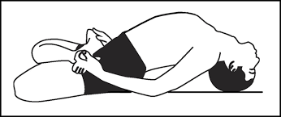

आसन > मत्स्यासन :

-
मत्स्यासन, जिसे "फिश पोज़" भी कहा जाता है, छाती को खोलने और श्वास प्रणाली को मजबूत करने के लिए
एक प्रभावी योगासन है।
मत्स्यासन करने की विधि :
- आरंभिक स्थिति: पीठ के बल लेट जाएं और पैरों को सीधा रखें।
- हाथों की स्थिति: दोनों हाथों को कूल्हों के नीचे रखें, हथेलियों को नीचे की ओर रखें।
- छाती को उठाना: गहरी सांस लेते हुए सिर और छाती को ऊपर उठाएं, सिर को पीछे की ओर झुकाएं और
सिर का शीर्ष भाग फर्श को छुए।
- ध्यान मुद्रा: इस स्थिति में, पैरों को सीधा रखें और आँखें बंद करके ध्यान मुद्रा में रहें।
- सामान्य स्थिति में लौटना: धीरे-धीरे सिर और छाती को वापस फर्श पर लाएं और हाथों को आराम की
स्थिति में रखें।
लाभ :
- मत्स्यासन छाती को खोलता है और श्वास प्रणाली को मजबूत करता है।
- यह थकान और तनाव को दूर करने में भी मदद करता है।
Move to top